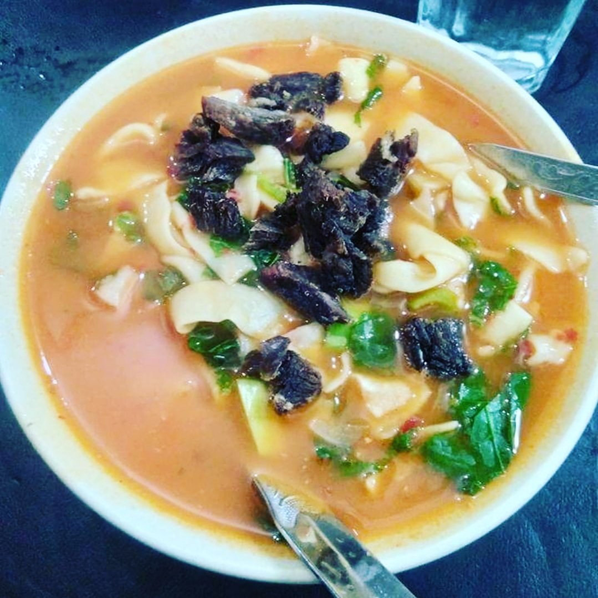

Procedure
- Place the flour in a mixing bowl and pass enough water to make a soft dough. (Keep some flour aside for dusting.)
- Knead the dough until soft and elastic.
- On a flat board dusted with flour, take a small handful of dough and roll it out with a rolling pin. Make a fairly thin, large circle.
- Place the flat, rolled out dough on the cutting board. Using a knife, cut strips about 1 cm wide creating noodles.
- Repeat the process with the rest of the dough.
- Wash and chop the onion into small pieces.
- Add the noodles into a pot containing 3-4 cups of boiling water and stir it. Then add the onions and other ingredients, oil, salt, pepper and chilli powder.
- Cover the pot and let it boil for a few minutes. Stir occasionally so the noodles don’t stick together.
- When the noodles turn glossy and have no flour residue, they are cooked.
- Best served hot!
Ingredients
- 1 kg of flour
- 2 tbs of salt and chilli powder
- 3 – 4 tbs of oil
- Pepper
- 1 onion